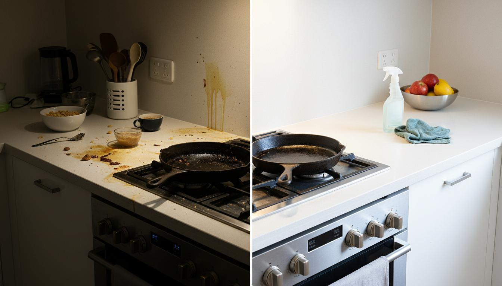

نصائح الخبراء
كم مرة تحتاج التنظيف العميق في مناخ قطر؟
مناخ قطر الفريد — الحار والرطب والمغبر — يتطلب نهجاً مختلفاً في التنظيف. إليك الجدول الموصى به من خبراء جنم.
4.9★ تقييم جوجل
مرخص من وزارة الداخلية
خدمة نفس اليوم
كم مرة تحتاج التنظيف العميق في مناخ قطر؟

العيش في قطر يمثل تحديات فريدة في التنظيف. مزيج الغبار الصحراوي والرطوبة العالية وحرارة الصيف الشديدة يعني أن منزلك يتراكم عليه الأوساخ والبكتيريا بشكل أسرع من العديد من المناخات الأخرى. التنظيف المنتظم يحافظ على مظهر الأسطح، لكن التنظيف العميق ضروري للحفاظ على بيئة منزلية صحية حقاً.
لماذا مناخ قطر يتطلب تنظيفاً عميقاً أكثر تكراراً
- الغبار الصحراوي: جزيئات الرمل الناعمة تتسرب من النوافذ والأبواب وأنظمة التهوية، وتستقر على كل سطح
- الرطوبة العالية (الصيف): تخلق ظروفاً مثالية لنمو العفن والفطريات والبكتيريا — خاصة في الحمامات والمطابخ
- غبار البناء: التطور المستمر في الدوحة يعني غباراً مستمراً من مواقع البناء القريبة
- تكييف الهواء: وحدات التكييف تدير الغبار والمواد المسببة للحساسية في جميع أنحاء المنزل، مما يتطلب تنظيفاً منتظماً للفلاتر والفتحات
- العواصف الرملية: العواصف الترابية الدورية تغطي كل شيء داخل منزلك بالرمل الناعم
جدول التنظيف العميق الموصى به لمنازل الدوحة
- كل 3 أشهر (ربع سنوي): تنظيف عميق قياسي لمعظم منازل الدوحة
- كل شهرين: للمنازل القريبة من مواقع البناء أو الطرق الرئيسية
- موسمياً: قبل الصيف (أبريل/مايو) وبعد الصيف (أكتوبر/نوفمبر)
- بعد العواصف الرملية: تنظيف عميق فوري لإزالة الغبار والجسيمات المحمولة في الهواء
- عند الانتقال: تنظيف عميق دائماً قبل الانتقال إلى منزل جديد أو بعده
- بعد التجديد: ضروري بعد أي أعمال تجديد في المنزل
علامات تدل على أن منزلك يحتاج تنظيفاً عميقاً
- تراكم غبار مرئي خلال ساعات من المسح
- روائح عفنة في الحمامات أو الغرف المغلقة
- أعراض الحساسية تتفاقم في المنزل
- تلون الجبس في الحمامات
- تراكم الكلس على الحنفيات ورؤوس الدش
- النوافذ تبدو ضبابية حتى بعد التنظيف
المناطق التي تحتاج عناية إضافية في قطر
أثناء التنظيف العميق في الدوحة، بعض المناطق تتطلب تركيزاً خاصاً:
- فتحات وفلاتر التكييف: نقاط تراكم الغبار الرئيسية
- مجرى النوافذ وعتباتها: الرمل الناعم يتجمع هنا باستمرار
- تحت وخلف الأثاث: كرات الغبار تتراكم بسرعة في هواء قطر الجاف
- خزائن المطبخ: الشحوم والغبار يتحدان بسهولة أكبر في الظروف الرطبة
- جص الحمام: نمو العفن يحدث بشكل أسرع في رطوبة قطر
مستعد لتنظيف عميق احترافي؟ احجز جنم للتنظيف اليوم واختبر الفرق الذي يحدثه التنظيف الشامل.